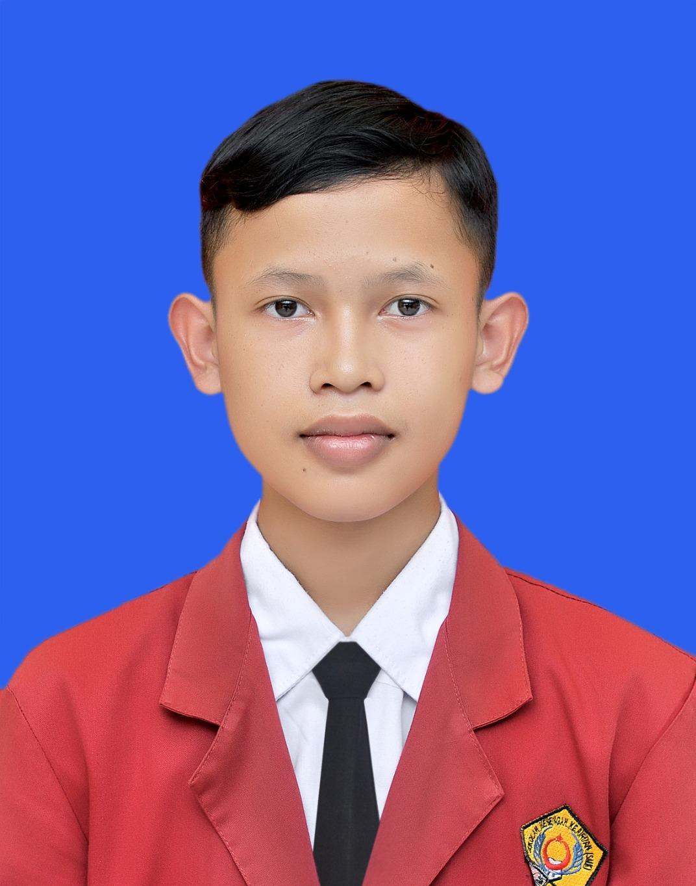

Now Playing
Lofi Study Session
Halo! Saya Aa. Laman ini adalah ruang digital di mana saya menyimpan memori perjalanan hidup, dedikasi di organisasi, dan semangat dalam dunia teknologi.

$ status --project "RA-Project"
> Initializing system...
> PHP CodeIgniter 3 detected.
> Loading UKK Digital Archive...
[OK] System is running smoothly.
$ _
Kilas balik momen-momen penting yang membentuk diri saya hari ini.

Pengelolaan arsip di sekolah masih manual dan sering terjadi penumpukan dokumen fisik yang berisiko hilang.
Membangun platform berbasis web dengan PHP CodeIgniter 3 untuk digitalisasi dokumen secara otomatis dan terstruktur.
Apa yang mereka katakan tentang kerja sama tim dan solusi teknis saya.
"Ra sangat membantu saat kami stuck di logika database CI3. Aplikasi UKK kami bisa selesai tepat waktu berkat arahannya yang jelas."
Jurusan RPL
"Leadership-nya di organisasi (Ketua OSIS & DKR) sangat terasa saat mengelola projek tim. Disiplin tapi tetap asik diajak diskusi."
DKR Mihadunal Ula
Berkontribusi untuk lingkungan sekitar dan belajar menjadi pemimpin yang berdampak.
Momen singkat yang terekam dalam perjalanan.
"Memuat inspirasi..."